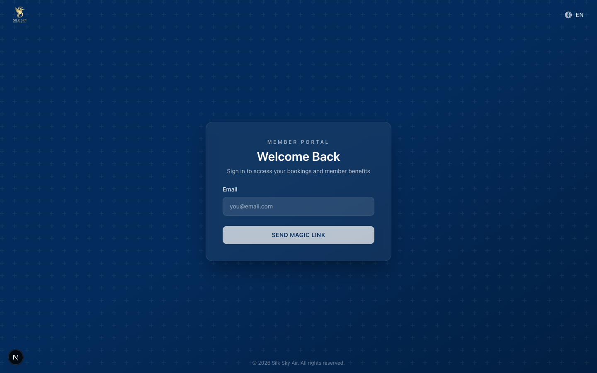

Sign In with Magic Link (Member Portal)
App: Member Portal Who uses it: Customers signing in to view bookings + manage their account. Support staff helping customers who say "I can't log in" or "I didn't get the link". What it does: Member Portal is magic-link only — customers enter their email, receive a sign-in link by email, and click it. There is no password to set, recover, or remember.
What customers see
The sign-in page renders a single email field and a Send Magic Link button. There is no password input, no Sign In button, no Forgot Password link, no "or sign in with password" toggle.

What the customer does:
- Visit the Member Portal sign-in URL (deep-link from an email + redirect_to also works — see below).
- Enter the email used on the booking.
- Click Send Magic Link.
- Open the email in the same browser, click the link, and arrive at their bookings.
Why magic-link only
Passwords are the most common support burden for low-frequency consumer apps. Customers who book one flight per year don't remember a password they set 12 months ago. Magic links eliminate that whole class of "I forgot my password" / "the reset email never arrived" / "I'm locked out" tickets — at the cost of one extra email round-trip on sign-in. For Member Portal's usage pattern, that's a good trade.
The Account Portal (back-office, partner-portal, manager) still uses password auth — those are high-frequency surfaces for power users who type credentials many times a day. Magic-link-only is a Member-Portal-specific policy.
How redirect_to works
A common case: customer clicks a link in a confirmation email (e.g. "view your booking") that points at a protected URL. The middleware redirects them to /sign-in?redirect_to=/bookings/<id>. The sign-in page reads redirect_to and stores it on the magic-link row. After they click the link in their email, the verify endpoint redirects them to /bookings/<id> directly (instead of /home).
Code path: app/(auth)/sign-in/page.tsx reads redirect_to via lib/auth/url-context.ts → getMemberAuthContext(searchParams) and passes it down to <SignInForm>. The form forwards it to /api/auth/send-magic-link, which stashes it on the member_accounts row. /api/auth/verify reads it back on the successful verification and redirects there.
Token expiry + reuse
- Magic-link tokens expire 15 minutes after creation (default; configured in
lib/config/member-portal.ts: magicLinkExpiryMinutes). - Tokens are single-use — once verified successfully, the token is cleared from the row.
- A customer who reuses a stale/already-clicked link lands on
/sign-in?error=invalid_tokenand can request a new link from there.
Support staff playbook
"I never got the magic link." First: confirm the email address the customer entered. Typos are the most common cause. Next: check the customer's spam/junk folder. Magic-link emails come
from: "Silk Sky Guest Services Information" <system@silkskyair.com>; some filters quarantine these. If still missing, the SilkSky team can resend (ops will check the n8n execution log formember-magic-link-emailto confirm delivery).
"The link says it's expired." Tokens are valid for 15 minutes from creation. Ask the customer to return to the sign-in page and request a fresh link. There's no way to extend a token's expiry — by design, since stale tokens are an unconditional security risk.
"I clicked the link but it says invalid token." Most common cause: the customer already clicked the link once in a different browser/device (single-use), or they opened it after 15 minutes. Send a new one. Less common: the link was forwarded and the forwarder clicked it. There's no way to recover from this — by design, since allowing token reuse would defeat the security model.
"I never set a password — what's my password?" Member Portal doesn't have passwords. You sign in with your email and a one-time link sent to that address. The link works only once and only for 15 minutes after it's sent. There's nothing else to remember.
Reference
- Source:
silkskyair-member/lib/auth/url-context.ts(policy),components/auth/sign-in-form.tsx(form),app/(auth)/sign-in/page.tsx(entry). - API:
app/api/auth/send-magic-link/route.ts(issue),app/api/auth/verify/route.ts(consume + session cookie). - N8N workflow:
silkskyair-workflows/workflows/auth/member-magic-link-email.json(AAC | SAA | Notifications | Member Magic Link Email, idPzxaHqaByizWNC69). - E2E:
silkskyair-member/e2e/member-magic-link-simple.spec.ts— asserts the sign-in surface renders the magic-link-only shape.silkskyair-member/e2e/member-magic-link-full.spec.ts— round-trip through the real n8n execution: POST send-magic-link → poll workflow execution → extract real verify_url → navigate → assert session cookie set + redirect lands on the redirect_to path.